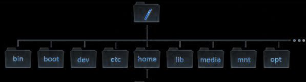
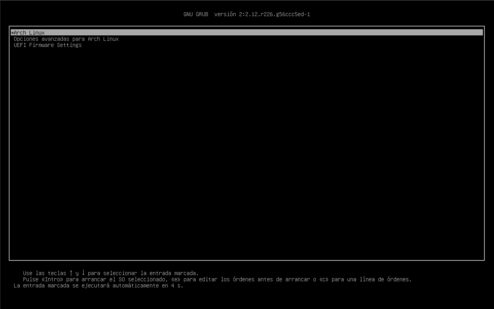

Instalar Archlinux UEFI - EXT4
Iniciamos entrando al BootMenu y seleccionando la USB con la ISO de Arch.
Luego en Arch Linux Install medium (x86_64, UEFI), la segunda opción es con lectura para las personas con discapacidad.
Configuración de teclado
Establecer distribución del teclado temporal para que reconozca todos los caracteres
Ponemos nuestro teclado para Español
root@archiso ~ # loadkeys es
Ponemos nuestro teclado para LatinoAmerica
root@archiso ~ # loadkeys la-latin1
Ponemos nuestro teclado para Americano
root@archiso ~ # loadkeys us
Conexión a Internet por Wifi
Si desea conectarse por wifi, es conveniente primero verificar si se ha cargado correctamente el controlador de la tarjeta wifi.
Compruebe que en la salida del siguiente comando exista un fichero que inicie con la letra wl...
wlan0
wlp2s0
Otros...
root@archiso ~ # ls /sys/class/net
Si no existe ningún fichero que inicie con la letra wl,entonces no podrá realizar la instalación vía wifi.
Si por el contrario el fichero existe entonces será posible conectarse a Internet vía wifi.
Dentro del LiveUSB hay dos programas para conectarse por wifi:
iwctl
mmcli
IWCTL
iwctl está diseñado específicamente para gestionar conexiones Wi-Fi en sistemas Linux. A diferencia de mmcli, que se enfoca en módems celulares, iwctl es ideal para tarjetas Wi-Fi tradicionales.
root@archiso ~ # iwctl --passphrase "miClave123" station wlan0 connect "MiCasaWiFi"
MMCLI
Si prefieres usar mmcli (la herramienta de línea de comandos de ModemManager) para conectarte a una red Wi-Fi, debes tener en cuenta que mmcli está diseñado principalmente para gestionar conexiones de red a través de módems celulares (3G/4G/5G) y no para conexiones Wi-Fi tradicionales.
root@archiso ~ # mmcli -m 0 --wifi-connect="MiCasaWiFi" --wifi-password="miClave123"
Conexión a Internet por Ethernet Cable
Se recomienda usar la conexión por cable en ves de la inalámbrica, para mayor estabilidad y velocidad del Internet.
Para conexión por cable tan solo es necesario tener conectado el cable de Ethernet.
Luego hacer un ping para verificar la conexión a Internet:
root@archiso ~ # ping -c 8 archlinux.org
Por defecto en la ISO habilita el servicio de DHCP y NetworkManager para el uso de red cableada
Podemos ver que esta descargando paquetes y lo hace por 8 veces tal cual el comando ejecutado.
Cambiar el Idioma en liveUSB
Vamos a configurar el idioma temporal de las herramientas disponibles a nuestro idioma español, sobre todo las de particionado.
root@archiso ~ # echo "es_ES.UTF-8 UTF-8" > /etc/locale.gen
Ahora vamos a aplicar la configuración.
root@archiso ~ # locale-gen
Exportamos la variable LANG para finalizar la configuración regional temporal.
root@archiso ~ # export LANG=es_ES.UTF-8
Comprobamos que este en español con pacman
root@archiso ~ # pacman -Sy
Disco Duro y Particiones
Hay que aprender a identificar como es la ruta de nuestros discos luego saber cuales son particiones.
Ruta de disco pueden ser:
/dev/sda (Discos sdd o hdd)/dev/sdb (Discos sdd o hdd)/dev/sdc (Así cambia de letra...)/dev/nvme0n1 (Discos nvme)/dev/mmcblk0 (SD Card)PARTICIONES
Pueden ser:
/dev/sda1
/dev/sda2
/dev/sda3
/dev/nvme0n1p1
/dev/nvme0n1p2
/dev/nvme0n1p3
/dev/mmcblk0p1
/dev/mmcblk0p2
/dev/mmcblk0p3Para revisar nuestros discos y particiones con :
root@archiso ~ # lsblk

Aquí podemos revisar que tenemos 4 Discos y un disco Nvme.
Lo pueden identificar rápidamente viendo TYPE que esta como disk
/dev/sda /dev/sdb /dev/sdc /dev/sdd /dev/nvme0n1 Dato: Arch Linux incluye las siguientes herramientas de particionado:
● cfdisk es para crear y modificar particiones facilmente ● Fuente: https://wiki.archlinux.org/index.php/Partitioning
Estructura de ficheros en Linux

Debemos saber que de root [ / ] nacen las demás carpetas
La ventaja que Linux permite asignarle una partición para cada carpeta
Podemos tener /boot/ en una partición
Podemos tener /home/ en otra partición
/home/ la carpeta HOME guarda los archivos de todos los usuarios algo parecido a un DISCO D: de windows
Todo depende si queremos tenerlo separado en otra partición
Ejemplos de particionados en UEFI - GPT
>> Ejemplo 1 de particionado en GPT
/dev/sda1 EFI SYSTEM en FAT32 /dev/sda2 ROOT - HOME - ETC...
>> Ejemplo 2 de particionado en GPT
/dev/sda1 EFI SYSTEM en FAT32 /dev/sda2 ROOT - HOME - ETC... /dev/sda3 [SWAP]
>> Ejemplo 3 de particionado en GPT
/dev/sda1 EFI SYSTEM /dev/sda2 ROOT /dev/sda3 [SWAP] /dev/sda4 HOME
>> La documentación oficial nos recomienda usar en GPT la siguiente estructura
Memoria SWAP
● Menos de 1GB RAM física = 2GB de SWAP ● Entre 2GB a 4GB RAM física = 2GB a 4GB de SWAP ● 8GB de RAM física = 4GB de SWAP ● Más de 8GB de RAM física = 2GB a 4GB de SWAP
● Pero si necesitan hibernación 8Gb serán suficientes
Particionado de Disco
Discos Duros en UEFI tienen la etiqueta de GPT que permite mas de 128 particiones primarias.
Podemos Revisar que discos tenemos con dos programas fdisk y lsblk.
root@archiso ~ # fdisk -l
root@archiso ~ # lsblk
Identificamos el disco en este caso es /dev/vda.
Borramos todo lo que tiene el disco para hacer una instalación limpia:
root@archiso ~ # sgdisk --zap-all /dev/vda
Ahora abrimos un particionador semi gráfico en este caso usaremos cfdisk:
● Video tutorial para aprender a usar cfdisk
root@archiso ~ # cfdisk /dev/vda
Nuevamente aclaro que para sistemas UEFI se trabaja con GPT, seleccionamos la etiqueta GPT!

● Vamos empezar creando nuevas particiones en [ Nueva ] o eliminando las particiones en [ Eliminar ] ● Podemos crear varias particiones: vda1, vda2, vda3... ● Podemos crear las particiones y cambiar el tipo de partición en [ Tipo ] ● Flecha Arriba / Abajo - Flechas Derecha / Izquierda - para movernos en cfdisk
● Empezamos con 300M para la particion de Arranque EFI ● Luego 4G para SWAP ● Finalizamos con lo que queda para Root
Ahora toca cambiar el tipo de partición estando ubicados en la partición que queremos cambiar el tipo se mueven a la izquierda en [ Tipo ]
● Para la particion EFI /dev/vda1 debe ser tipo EFI System ● Para la particion SWAP /dev/vda2 debe ser tipo Linux Swap ● Para la particion ROOT /dev/vda3 debe ser tipo Sistema de ficheros de Linux
● Al finalizar el particionado le damos en [ Escribir ] para confirmar los cambios escribiendo si ● Luego en [ Salir ].
Podemos revisarlo con fdisk -l
Formatear las particiones
Existen múltiples formatos de particiones disponibles para usar, sin embargo en esta guía usaremos Ext4
Ext4 es el más usado y recomendado si eres nuevo en linux.
Formateo de la Partición de arranque para UEFI siempre debe ser en FAT32:
root@archiso ~ # mkfs.fat -F32 -n "UEFI" /dev/vda1
Formateo de la Partición SWAP:
root@archiso ~ # mkswap -L "SWAP" /dev/vda2
Activación SWAP ON:
root@archiso ~ # swapon /dev/vda2
Formateo de la Partición de Root :
root@archiso ~ # mkfs.ext4 -L "ROOT" /dev/vda3
Montar las particiones al disco duro
Ahora para root en este ejemplo es /dev/vda3 lo cual debe ser montado primero
Ya que todo inicia con ROOT [ / ]
root@archiso ~ # mount /dev/vda3 /mnt/
Para montar las particiones necesitamos crear antes las rutas lógicas de montaje.
Necesitamos hacer un chroot dentro de /mnt/
Para el resto de directorios /boot o /home, etc...
1. Creamos la carpeta para el arranque en UEFI
root@archiso ~ # mkdir -p /mnt/boot
/mnt - sistemas de archivos montados manualmente en el disco duro.
/ - diagonal invertida significa root
Montando la partición de Arranque /boot
root@archiso ~ # mount /dev/vda1 /mnt/boot
Luego de formatear y montar las particiones podemos revisarlo que todo este bien con lsblk
Obtener lista de servidores más rápidos
En algunos casos pacstrap les resulta una descarga muy lenta
Eso se debe al no
tener los mirros mas rápidos.
Para tener los Mirros más rápidos para tener mejores descargas usaremos reflector
root@archiso ~ # pacman -Sy reflector python --noconfirm
Para ejecutar reflector y tener los mejores Mirrors :
root@archiso ~ # reflector --verbose --latest 5 --sort rate --save /etc/pacman.d/mirrorlist
Para revisar la lista de Mirrors Servers y confirmar que lo hizo reflector el comando es:
root@archiso ~ # cat /etc/pacman.d/mirrorlist
Instalación de programas con Pacstrap
Empezamos descargando programas bases y esenciales:
root@archiso ~ # pacstrap -K /mnt base base-devel nano
● La opción -K es útil si estás reinstalando o actualizando un sistema y quieres preservar las configuraciones existentes en lugar de sobrescribirlas con las configuraciones por defecto de los paquetes. ● /mnt : Es el punto de montaje donde has montado el sistema de archivos raíz (root) del sistema que estás instalando. ● base : Es un grupo de paquetes esenciales para un sistema Arch Linux básico. ● base-devel : Un grupo de paquetes que incluye las herramientas necesarias para construir el sistema. ● nano : Un editor de texto semi gráfico.
Kernel del sistema:
root@archiso ~ # pacstrap -K /mnt linux linux-firmware linux-headers mkinitcpio
● linux : kernel en su versión estable. ● linux-firmware : Binarios de controladores generalmente propietarios. ● linux-headers : Cabezeras del kernel en su versión estable. ● mkinitcpio : Utilidad de creación de imágenes initramfs para el kernel.
● Vea la lista de kernel disponibles en Arch Linux
Touchpad en laptops (Opcional):
root@archiso ~ # pacstrap -K /mnt xf86-input-libinput libinput
Archivo FSTAB
Es un script usado para definir el arranque de todas las particiones,
Estas definiciones se montaran de forma dinámica en el arranque:
root@archiso ~ # genfstab -U /mnt >> /mnt/etc/fstab
Configurando nuestro sistema Arch mediante CHROOT
Esto te permite ejecutar comandos dentro de ese entorno como si estuvieras en el sistema instalado.
root@archiso ~ # arch-chroot /mnt
● Entramos a raíz como root
● Vemos cambio el color y cambio el ~ del livecd por / que significa root.
● Dentro de nuestro sistema vamos a configurar idioma, teclado, hora y usuarios.
Idioma del Sistema
Primero modificamos un archivo con nano previamente instalado con pacstrap.
Quitamos el # en nuestro idioma, el formato sería: es_[país].UTF-8 UTF-8
[root@archiso /]# nano /etc/locale.gen
● Ctrl + W para buscar palabras en nano
● Ctrl + O para guardar en nano
● Ctrl + X para cerrar en nano
Generamos el idioma desmarcado quitando #, para contiguar con:
[root@archiso /]# nano /etc/locale.gen
Vamos a estar usando mucho el comando echo
Su uso es el siguiente:
[root@archiso /]# echo [texto-a-ingresar] > [archivo-a-guardar]
[root@archiso /]# echo(Espacio)[texto-a-ingresar](Espacio)>(Espacio)[archivo-a-guardar]
Establezca la variable LANG en locale.conf
Mi caso es es_PE.UTF-8
[root@archiso /]# echo LANG=es_PE.UTF-8 > /etc/locale.conf
Exporte la variable LANG con el local especificado:
[root@archiso /]# export LANG=es_PE.UTF-8
Ahora ya tendriamos el sistema en español, comprobamos con pacman -Sy:
Zona Horaria
Podemos verificar la hora de nuestro sistema ejecutando date, podemos ver que no esta sincronizado el reloj porque por defecto viene configurado para UTC.
Para comprobar la zona actual definida para el sistema:
[root@archiso /]# timedatectl status
Para enumerar las zonas disponibles:
[root@archiso /]# timedatectl list-timezones
[root@archiso /]# ls /usr/share/zoneinfo/
Para saber la zona horaria automáticamente según la ubicación con dirección IP, se puede usar una API de geolocalización para saber tu zona horaria.
Por ejemplo con el comando, curl https://ipapi.co/timezone o revisar con el celular que cadena de texto nos da entrar a ese link de https://ipapi.co/timezone
[root@archiso /]# ln -sf /usr/share/zoneinfo/America/Lima /etc/localtime
[root@archiso /]# timedatectl set-timezone America/Lima
Opción 2 - Instalando Curl para sacar la zona horaria y creando el enlace simbólico
[root@archiso /]# pacman -Sy curl --noconfirm ; ln -sf /usr/share/zoneinfo/$(curl https://ipapi.co/timezone) /etc/localtime
[root@archiso /]# timedatectl set-timezone $(curl https://ipapi.co/timezone)
Verifican que ya tengan la hora correcta en el sistema:
[root@archiso /]# timedatectl status
Ambas opciones son válidas manualmente o mediante curl.
timedatectl set-timezone durante el chroot, no funcionará permanentemente, solo es temporal.
Tenga en cuenta que para que sea un cambio permanente debe ser un enlace simbólico, como se especifica con ln -sf
Administrador y Usuarios
Contraseña para root:
[root@archiso /]# passwd root
Creamos nuestro usuario, para entrar a nuestro sistema:
[root@archiso /]# useradd -m -g users -G wheel -s /bin/bash nombre_de_usuario
[root@archiso /]# passwd nombre_de_usuario
En nombre_de_usuario, le cambiamos a nuestro gusto.
Sudoers
El archivo sudoers es un archivo de configuración en sistemas Linux y Unix que controla el uso del comando sudo. El comando sudo permite a los usuarios ejecutar comandos con privilegios de superusuario (root) o de otro usuario, según las reglas definidas en el archivo sudoers.
[root@archiso /]# nano /etc/sudoers
Dentro de nano buscamos con CTRL+W la cadena de texto root ALL=(ALL:ALL) ALL y en la linea abajo ponemos nuestro usuario
Para que tenga permisos y mismos privilegios al ejecutar sudo.
nombre_de_usuario ALL=(ALL:ALL) ALL
Ctrl + W para buscar palabras en nano
Ctrl + O para guardar en nano
Ctrl + X para cerrar en nano
Hostname - Nombre del Equipo
En nombre_de_pc le cambian por uno a su gusto, más adelante crearan un usuario.
[root@archiso /]# echo nombre_de_pc > /etc/hostname
Reloj del Sistema
El comando hwclock -w se utiliza en sistemas Linux para sincronizar la hora del sistema (la hora del reloj del software) con la hora del hardware (el reloj de la computadora).
Esto es útil cuando has ajustado la hora del sistema manualmente o mediante NTP (Network Time Protocol) y deseas que esos cambios se reflejen en el reloj de hardware, para que persistan incluso después de reiniciar la máquina.
[root@archiso /]# hwclock -w
Configurar la distribución del teclado en la terminal virtual (TTY)
Para definir la distribución del teclado en la terminal virtual (TTY) y que permanezca después de cada reinicio, debes editar el archivo /etc/vconsole.conf.
Este archivo controla la configuración de la consola virtual, incluyendo la distribución del teclado.
[root@archiso /]# echo KEYMAP=es > /etc/vconsole.conf
Podemos ver la lista de keymaps con:
[root@archiso /]# localectl list-keymaps
Servicios de conexión a Internet - DHCP
El Dynamic Host Configuration Protocol (DHCP) es un protocolo que permite a los dispositivos en una red obtener automáticamente una dirección IP, la máscara de subred, la puerta de enlace y otros parámetros de red desde un servidor DHCP.
[root@archiso /]# pacman -Sy dhcpcd networkmanager iwd
dhcpcd:
Cliente DHCP para obtener una dirección IP automáticamente.
networkmanager:
Gestor de red para configuraciones automáticas y fáciles.
iwd:
Demonio para manejar conexiones Wi-Fi (opcional, pero recomendado para Wi-Fi).
Habilitar y arrancar los servicios:
● Para NetworkManager (gestor de red) debe ser igual con Mayúsculas & Minúsculas:
[root@archiso /]# systemctl enable --now NetworkManager
● Para dhcpcd (cliente DHCP):
[root@archiso /]# systemctl enable --now dhcpcd
● Para iwd (Solo si tienen Wi-Fi):
[root@archiso /]# systemctl enable --now iwd
● Comando completo para activar todos los servicios:
[root@archiso /]# systemctl enable --now NetworkManager dhcpcd iwd
Servicios de Bluetooh - bluez
En Linux, la implementación canónica del stack de protocolos Bluetooth es BlueZ.
[root@archiso /]# pacman -Sy bluez bluez-utils
[root@archiso /]# systemctl enable --now bluetooth
Si desean gestionar o conectarse algún dispositivo de Bluetooth, pueden hacerlo desde la terminal con bluetoothctl.
MirrorList
Reflector es un script que es capaz de generar una lista y usa los repositorios mas rápidos.
Ordenarlos en base a su velocidad, y escribir en el archivo /etc/pacman.d/mirrorlist
[root@archiso /]# pacman -Sy reflector
[root@archiso /]# reflector --verbose --protocol https --latest 5 --sort rate --save /etc/pacman.d/mirrorlist
--protocol https:
Filtra por protocolo (por ejemplo, http o https).
--latest 5:
Selecciona los 5 mirrors más recientemente sincronizados.
--sort rate:
Ordena los mirrors por velocidad de descarga (los más rápidos primero).
--save /etc/pacman.d/mirrorlist:
Guarda la lista generada en el archivo de configuración de mirrors de Pacman.
GRUB - Gestor de arranque
Antes de iniciar con el grub debemos verificar que tenemos las img de linux y luego instalamos grub:
[root@archiso /]# ls /boot
Generalmente no es necesario crear un nuevo initramfs, porque mkinitcpio se ejecutó durante la instalación del paquete del kernel con pacstrap.
[root@archiso /]# pacman -S grub efibootmgr os-prober
grub:
GRUB (GRand Unified Bootloader) es un gestor de arranque que permite seleccionar y cargar sistemas operativos instalados en tu computadora.
efibootmgr:
Es una herramienta para gestionar las entradas de arranque UEFI.
os-prober:
Es una herramienta que detecta otros sistemas operativos instalados o proximos a instalar en el disco.
● Instalar GRUB:
Aquí solo importa recordar cual fue la particion de EFI y cual fue la carpeta que crearon para EFI
En este caso fue formateado en /dev/vda1 y la carpeta fue /mnt/boot Entonces instalamos grub en /boot
Lo podemos revisar con lsblk
[root@archiso /]# grub-install --target=x86_64-efi --efi-directory=/boot --bootloader-id=Arch --removable
Lo podemos revisar que carpetas nuevas se crearon y que se instaló correctamente con du -h /boot
● Nota adicional:
Si estás en un sistema BIOS (no UEFI), no necesitas efibootmgr. En su lugar, instala GRUB en el MBR del disco
● Personalización de GRUB:
[root@archiso /]# nano /etc/default/grub
Podemos cambiar el tiempo de espera de Grub en GRUB_TIMEOUT=5 y quitar el arranque silencioso borrando quiet.
El arranque silencio no muestra estos mensajes que inician todos los servicios del sistema operativo.
Para que funcione os-prober debemos quitar el comentario, eliminando # de GRUB_DISABLE_OS_PROBER.
● Generar archivo de configuración de GRUB:
Despues de hacer las modificaciones del tiempo de espera de la pantalla de espera de GRUB o modficar si tendra arranque silenciono y activando os-prober podemos generar el archivo de configuración que leera el sistema para iniciar GRUB.
[root@archiso /]# grub-mkconfig -o /boot/grub/grub.cfg
Personalización de Pacman.conf
El archivo general de configuración de pacman se encuentra en:
[root@archiso /]# nano /etc/pacman.conf
Bajamos hasta # Misc options
Aqui quitamos los comentarios marcados por # :
UseSyslog:
Envía logs de Pacman al sistema de logs.
Color:
Habilita colores en la salida de Pacman.
NoProgressBar:
Desactiva la barra de progreso.
CheckSpace:
Verifica el espacio en disco antes de instalar.
VerbosePkgLists:
Muestra una lista detallada de paquetes.
ParallelDownloads:
Permite descargas paralelas y que numero de descargas paralelas.
DownloadUser:
Especifica un usuario para las descargas (útil para seguridad).
Asegúrate de que el usuario (alpm en este caso) exista en el sistema, sino dejalo con comentario #.
DisableSandbox:
Desactiva el entorno aislado de Pacman (reduce la seguridad).
ILoveCandy:
Esto se escribe manualmente y se debe respetar las Mayúsculas y Minúsculas.
Activa la animación de Pacman comiendo.
● Activar el repositorio Multib en pacman.conf:
Quitamos el # comentario en el repositorio de [multilib]
Esto nos brinda varias librerias de 32bits, en juegos o programas viejos que necesitan esas librerias
Ctrl + W para buscar palabras en nano
Ctrl + O para guardar lo modifica en nano
Ctrl + X para cerrar el archivo en nano
Directorios de Usuarios
xdg-user-dirs es una herramienta para ayudar a administrar directorios de usuarios bien conocidos como :
Escritorio Documentos Descargas Música Imágenes Public Plantillas Videos
[root@archiso /]# pacman -S xdg-user-dirs
[root@archiso /]# xdg-user-dirs-update
[root@archiso /]# su nombre_de_usuario -c "xdg-user-dirs-update"
Tipografias
[root@archiso /]# pacman -S gnu-free-fonts ttf-hack noto-fonts-emoji
Programas extras
[root@archiso /]# pacman -S neofetch lsb-release git wget
● neofetch : Una información del sistema CLI. ● lsb-release : Consulta de versión LSB. ● git : Control de versiones Git. ● wget : Utilidad para descargar archivos de la Web.
Salir del USBLive
[root@archiso /]# exit
root@archiso ~ # umount -R /mnt
root@archiso ~ # reboot
Después de reiniciar
Iniciamos como root y en tty1 (terminal virtual 1)
Si tenemos conexión cableada solo basta tener cable conectado y activado el servicio dhcpcd
Revisamos la conexión a internet con ping
[root@nombredepc ~]# ping -c 3 archlinux.org
Con esto finalizamos la instalación del sistema base falta instalar muchas mas cosas como un gestor grafico, drivers de la gráfica, programas, pero eso ya es personalización de cada uno, dejare unos links para mayor información.
Antes de hacer alguna instalación siempre actualizamos el sistema con:
[root@nombredepc ~]# pacman -Syu
+ Conexión por Wifi - NMCLI o IWD
Un comando básico para saber el nombre de nuestra interfaz de red
[root@nombredepc ~]# ip link
Otro comando básico para saber la IP de nuestra PC
[root@nombredepc ~]# ip addr